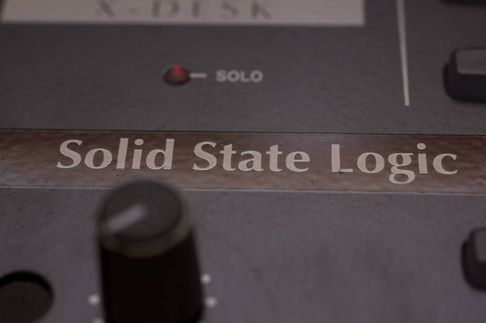
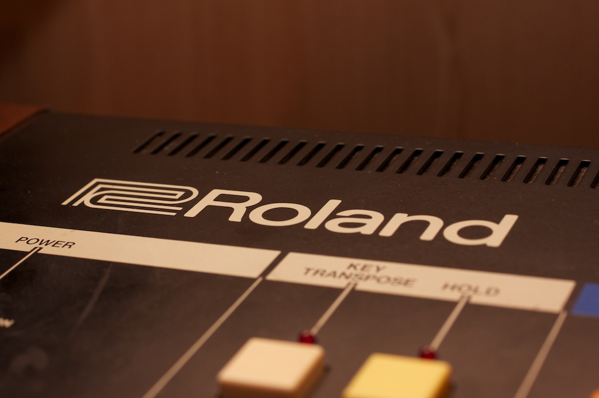

Microfonía
AKG 414 BXLS2 x Neuman KM 184
Shenheisser MD 441U
Electrovoice RE20
4 x Shure sm 57
ADK A51s
Rode Nt2 a
Shure beta 52
Audio Technica pro 35
Bayerdynamic M 422
AKG d3700
Mix/Pre
 SSL X-DESK (consola de Mezclas analoga Solid State Logic 20 canales)Mackie Control MCU hui (Controlador)
RME FIREFACE 800 (10 Canales de Conversión AD/DA de alta resolución 119db de rango dinámico)
ada 8000 (circuitería mejorada) se usa para D/A de 8 canales clockeada a la RME.
2 Preamplificadores Chamaleon Labs MKI
1 Preamplificador TrueSystems SOLO
1 Preamplificador Focusrite ISA ONE
8 preamplificadores (transformador en cada canal) Presonus M-80
2 Preamplificador DBX 386 dual vacuum tube stereo
1 Preamplificador JOEMEEK VC3 / Compresor óptico y excitador aural.
4 Preamplificadores RME
Preamplificador Phonic tubos (GEvintage) t81000
Caja directa DOD
Procesadores de Dynamica
 Compresor Stereo o dual mono AVALON AD 2044 (OPTO COMP)
Compresor Stereo o dual mono AVALON AD 2044 (OPTO COMP) 2 Compresores DBX 163X
Furman LC3A
Multi dynamics stereo, ART Mastering dynamic, compresor ,deser, limiter, expander, enhacer
FX (rack)
DOD R848 analog SPRING Reverb
GoldKing analog delay
2 x Microverb III Alesis 16bits (80 ́s)
FX (pedal)
Proco Rat Anolog Distortion
Software/CPU
Pro tools 9 con Ilok Mac Book Pro 2.4ghz 4 giga ram
Monitor
KRK 8
JBL L46
ADAM AX5
ANALOG SINTH
 MOOG The Rogue (monofonic analog sinth) +1 convertidor CV/GATE A MIDI Propan ROLANDJuno 6 (polyfonic analog sinth) + ROLAND TR 707 Drum Machine (triger arpegio clock del Juno 6 via Midi)
ARTURIA Minibrute
Controlador Midi
M audio Axiom 61
DRUM MACHINE
Roland TR 707 Casio Rz-1, yamaha Rx11, electribe Es1
Backline
Cabezal Gallien Kruger 400RB,caja Gallien kruger 4 por 10 ̈
Caja parlante novik 1 x 15 ̈
Bajo eléctrico HOFNER viola bass
Bajo eléctrico Fender Jazz bass (Mexico)
Bateria Pearl Forum
Caja sonora
Amplificador de guitarra Fender Chorus Ultimate (caja 2 x 12) 130w
Guitarra Eléctrica Fender Squier Strat
Guitarra Acústica Cuerdas Metálicas Washburn
Guitarra Acústica Cuerdas nylon Admira